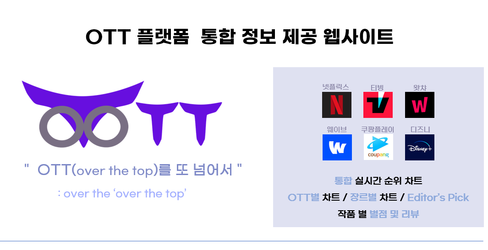

해당 프로젝트는 '웹프로그래밍실습' 팀 프로젝트로 진행한
프로젝트입니다.
해당 프로젝트는 OTT 플랫폼들의 통합적인 정보를 제공해주는
웹사이트를 구현하는 것으로, 넷플릭스, 티빙, 왓챠 등 6곳의 플랫폼
여기저기에 흩어져 있어 원하는 작품을 찾기 불편했던 기존의
문제점을 해결해보고자 기획하게 하였습니다. 해당 서비스의 목적은,
여러 OTT 작품들을 하나의 웹사이트에서 확인 가능한 서비스 제공이
목적이었으며,
- 통합 실시간 순위 차트 제공
- OTT별 / 장르별 차트 별도 제공
- 사용자의 무드에 맞게 흥미를 끄는 주제로 추천해주는 EDITORS
PICK 작품들 제공
- 개별 작품의 기본 정보, 별점 및 리뷰 확인 기능 제공
- 개별 작품을 감상 가능한 OTT 플랫폼 리스트 제공
다음과 같은 서비스를 제공하고자 하였습니다.
OTT 통합 정보 제공 사이트, OTOTT
2023년 06월 01일
